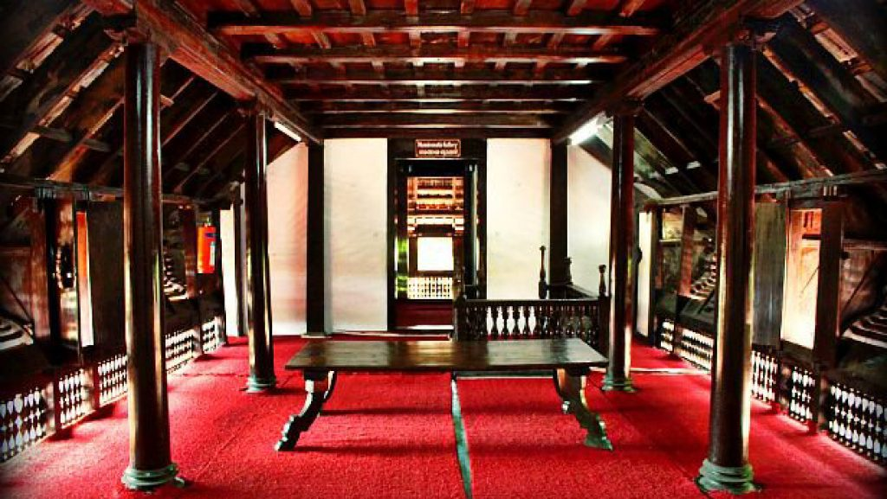
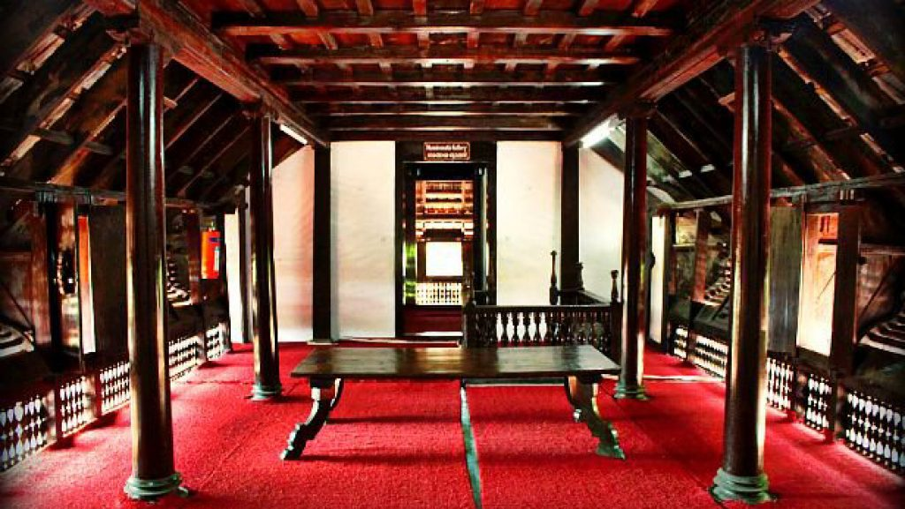
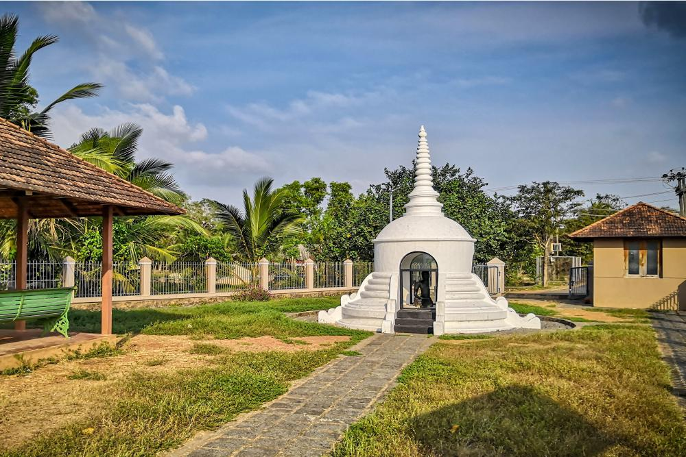
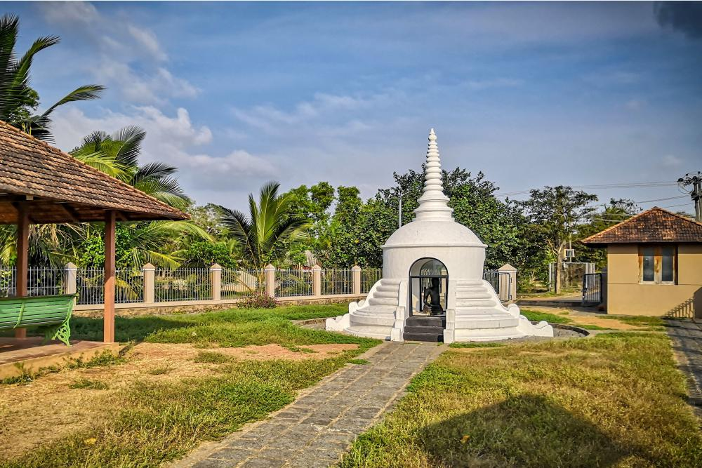

Alappuzha (Alleppey) is known as ‘the Venice of the East’. Offering the best tourist places in Alleppey, this charming place is the hub of Kerala’s backwaters and is home to a huge network of backwaters and more than thousand houseboats. A perfect place to unwind with its laidback canals and lush greenery. It is one of Kerala’s most mesmerisingly beautiful and relaxing experiences.
ALAPPUZHA TOURISM
ALAPPUZHA
TRAVELLING TO ALAPPUZHA
By Air
By Train
By Road
IDEAL TIME TO VISIT
Winter(December to February)
This season is the best season to visit Alleppey because the weather remains pleasant and perfect for sightseeing activities in Alleppey. The winter season starts from the month of November and ends on February. The temperature ranges between 17°C and 32°C.
Summer (March to May)
The weather during summers remains extremely humid. The temperature varies between 25°C to 37°C. Even if the days are hot, evenings are cool this destination is ideal for sightseeing and backwater excursions.Monsoon (June to September)
Alleppey receives heavy rainfall during this season. You may not be able to enjoy the outdoor activities like other seasons , but you can enjoy monsoon season applauding the beauty of Alleppey.POPULAR TOURIST SPOTS
1. Kuttanad Backwaters
The gorgeous surroundings of the Kuttanad Backwaters is a sight to behold. With paddy fields everywhere and the calm waters, there is nothing more that one can ask for on a relaxed holiday. You have many experiences to savour in Kuttanad. There is the backwater river cruise, boat rides and you can even devour delicious seafood at the restaurants near the lake.
2. Alappuzha Beach
It is one of the most popular attractions in the city. The scenic beach has a 150-year old pier merging into the sea. Alappuzha beach hosts many festivals including the famous Sand Art Festival. While the beach is loved by visitors who want to spend some quiet time, the place is also a hit among adventure lovers. You can try surfing, parasailing, and other activities on the beach
3. Krishnapuram Palace
Boasting the quintessential architectural style of Kerala, Krishnapuram Palace is a gorgeous 18th-century affair. Dormer windows, a gabled roof and narrow corridors lend it uniqueness. Once the property of Maharaja Marthanda Varma of Travancore, this palace (also includes a museum) is currently under the Kerala State Department of Archaeology’s care. Soak in the serenity of the large pond inside the palace, which is believed to conceal underground escape paths from enemies. Spare some time to admire a Bible written in Sanskrit and a double-edged sword called Kayamkulam Val.
4. Vembanad Lake
The longest lake in India, Vembanad Lake flows across several districts in Kerala. It is called by several names including Punamada Lake, Kochi Lake, and Vembanadu Lake. Among the major highlights of this lake is Kettuvallams (houseboats), numerous resorts along the banks and the famous Nehru Trophy Boat Race.
5. Pathiramanal
Pathiramanal means ‘Sands of the Night’. A small lake island on the backwaters of Lake Vembanad, it is an ideal spot to observe birds. There are more than 91 species of local and 50 species of migratory birds. Explore the island and you will be surprised to find yourself surrounded by some rare species of birds and chirping sound coming from everywhere.
6. Ambalappuzha Sree Krishna Temple
It is also called as ‘Dwarka of the South’, Ambalapuzha Sree Krishna Temple is said to be built between 15th – 17th century AD. Dedicated to Lord Krishna, the temple is one of the oldest shrines in the region. The main deity in the temple is Parthasarathi, which is another name for Lord Krishna. The idol is carved out of black granite and has a conch (shankh) in the left hand and holds a whip in right hand. The temple has traditional Kerala style architecture and is famous for its unique prasad – Pal Payasam, a milk and rice pudding.
7. Marari beach
Turquoise water, golden sand, and palm trees at the backdrop make Marari an ideal retreat for a beach vacation. If this isn’t enough to excite you, Marari beach was named among the top five ‘Hammock Beaches in the World’ by National Geographic Survey. You can try deep-sea fishing, surfing, parasailing, and water-skiing at the beach.
8. Karumadi
Karumadi is a small village which is famous for a 3 ft. tall, half broken statue of Lord Buddha; the left-hand side of the statue is missing. This black granite statue that is believed to be dating back to the 11th century was abandoned in a nearby stream and recovered by a British official named Sir Robert Bristow in 1930s. It is said that the statue has healing powers and anybody who touches the feet of the statue gets rid of their illness.

The nearest airport to Alleppey is Cochin International Airport, which is close to 100 kms away. Cochin International can connect you anywhere in the globe.

The Alleppey Railway Station is located about 4 km away from the city centre and connects Alleppey to other major cities like Trivandrum, Cochin, Vellore, Coimbatore, Chennai, Delhi, and Mumbai.
The National Highway 66 passes through the city, connecting it to other major cities like Coimbatore, Ernakulam, Thrissur, Kollam and Trivandrum via state run KSRTC buses. Luxury air-conditioned buses operate from Chennai, Mysore, Bangalore and Coimbatore to Alleppey.

 



 
